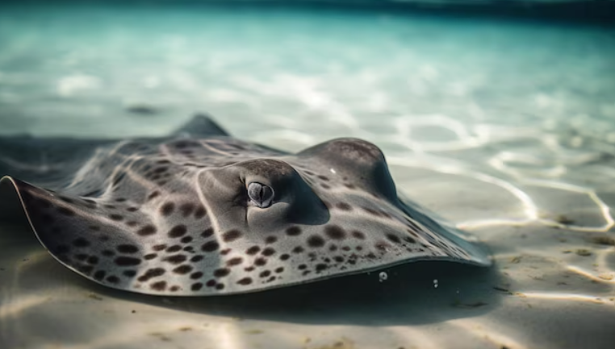
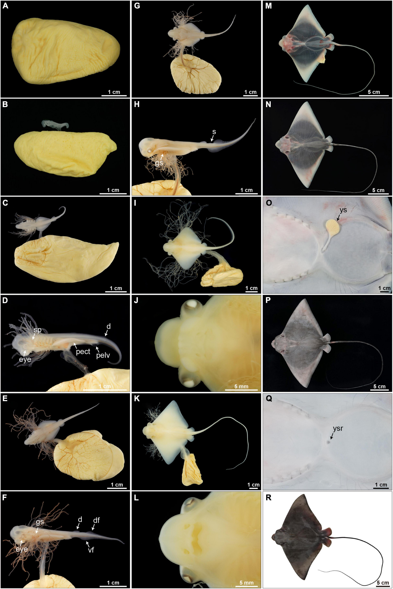

Stingrays go through many stages of development starting from an egg and growing into a fully mature adult. Each stage shows small changes in size, movement, and survival ability.

Stingrays go through many stages of development starting from an egg and growing into a fully mature adult. Each stage shows small changes in size, movement, and survival ability.

| 1. Egg | 2. Embryo | 3. Early Development | 4. Late Development | 5. Hatching | 6. Newborn |
|---|---|---|---|---|---|
| Stingray begins life inside a protective egg case. | Embryo forms and develops inside the egg. | Body shape becomes more defined. | Fins and tail continue forming. | Young stingray breaks out of egg case. | Fully formed but very small and vulnerable. |
| 7. Juvenile I | 8. Juvenile II | 9. Growth Phase I | 10. Growth Phase II | 11. Subadult I | 12. Subadult II |
| Begins learning to swim and hide. | Improves feeding skills in shallow waters. | Rapid growth in size and strength. | Becomes faster and more agile. | Starts moving into deeper waters. | Develops stronger survival instincts. |
| 13 .Near Adult I | 14. Near Adult II | 15. Pre-Mature | 16. Maturing | 17. Adult I | 18. Adult II |
| Almost full size but still developing. | Refining hunting and movement skills. | Body fully formed but not yet reproductive. | Approaching full maturity. | Fully grown stingray. | Fully mature, capable of reproduction. |